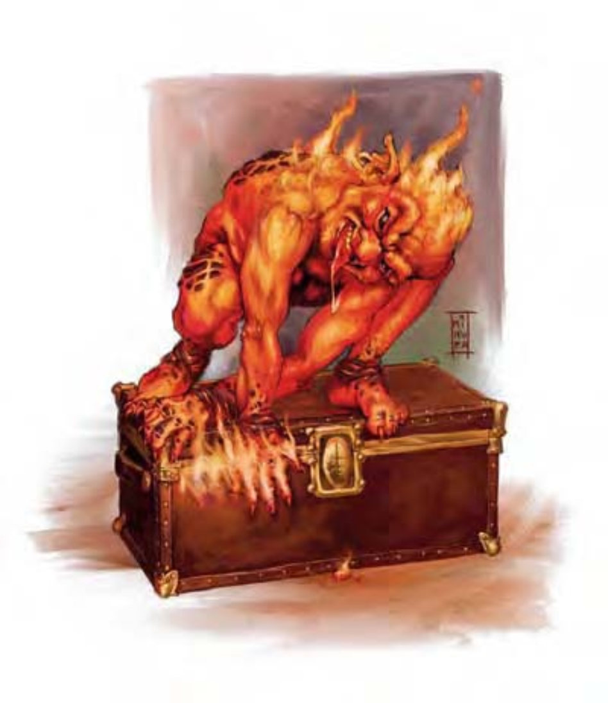

这种炽热的人形生物看起来像个由火焰与岩浆塑成的矮胖人类。他像堆小营火般散发热气，脸上有着调皮，带着些许恶意的笑容。
火童是一种来自火元素界的小型人形生物，全身散发着热气，且被一层灼热的火焰包围。
虽然火童并不邪恶，却非常喜欢恶作剧。他们喜欢看着东西燃烧，也很可能并不了解火焰会对其他生物造成疼痛，甚至致命。
一般火童高4英尺，体重400磅。
火童通晓火族语。
| 资料栏位 | 火童 (Magmin) 小型元素 (火焰、外界) |
| 生命骰 | 2d8+2 (11HP) |
| 先攻 | +0 |
| 速度 | 30英尺 (6格) |
| 防御等级 | 17 (+1体型、+6天生)、接触11、措手不及17 |
| 基本攻击/擒抱 | +1 / -1 |
| 攻击 | 燃烧之触+4近战接触 (1d8火焰附加燃烧)；或挥击+4近战 (1d3+3附加燃烧) |
| 全力攻击 | 燃烧之触+4近战接触 (1d8火焰附加燃烧)；或挥击+4近战 (1d3+3附加燃烧) |
| 占据/触及 | 5英尺 / 5英尺 |
| 特殊攻击 | 燃烧、业火灵光 |
| 特殊能力 | 伤害减免5 / 魔法、黑暗视觉60英尺、元素特性、对火焰免疫、熔化武器、易受寒冷伤害 |
| 豁免 | 强韧+3、反射+3、意志+0 |
| 属性 | 力量15、敏捷11、体质13、智力8、感知10、魅力10 |
| 技能 | 攀爬+4、侦察+3 |
| 专长 | 强韧加强 |
| 环境 | 火元素界 |
| 组织 | 单独、成队 (2-4) 或中队 (6-10) |
| 宝藏 | 标准钱币、标准宝物 (仅存不可燃物)、标准物品 (仅存不可燃物) |
| 阵营 | 总是混乱中立 |
| 进化 | 3-4HD (小型)；5-6HD (中型) |
| 等级修正值 | ― |
火童体型虽小却很危险。对于没有防火保护或对火焰免疫的人而言，他们的接触极具破坏力。至于对火焰免疫的敌人，火童会改用挥击对付他们。不论如何，火童并非骁勇善战的战士，受了伤会逃跑，不过通常只会跑到足以设置火焰来突袭敌人的距离。
在计算伤害减免时，火童的天生武器视为魔法武器。
燃烧 (特异)：任何被火童接触到的人都要通过反射检定 (DC=12)，否则会因衣物燃烧或盔甲灼热而遭受额外的1d8点火焰伤害。这种伤害会在火童最后一次接触到目标后维持1d4+2轮。火童可用接触引燃可燃物。豁免检定DC的调整值与体质调整值相同。
业火灵光 (特异)：由于温度极高，靠近火童20英尺内的生物都要进行强韧检定 (DC=12)，失败则每轮受到1d6点火焰伤害。豁免检定DC的调整值与体质调整值相同。
熔化武器 (特异)：任何击中火童的金属武器都必须进行强韧检定 (DC=12)，失败则熔化成一堆残渣。豁免检定DC的调整值与体质调整值相同。